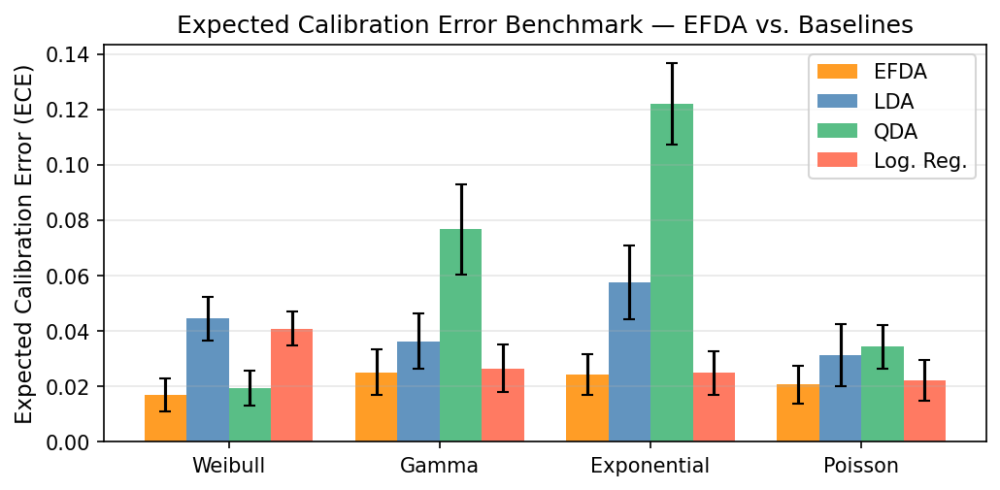

Formally verifies all four theoretical propositions of exponential-family discriminant analysis in Lean 4 via multiple proof generators.
Abstract
We introduce Exponential Family Discriminant Analysis (EFDA), a unified generative framework that extends classical Linear Discriminant Analysis (LDA) beyond the Gaussian setting to any member of the exponential family. Under the assumption that each class-conditional density belongs to a common exponential family, EFDA derives closed-form maximum-likelihood estimators for all natural parameters and yields a decision rule that is linear in the sufficient statistic, recovering LDA as a special case and capturing nonlinear decision boundaries in the original feature space. We prove that EFDA is asymptotically calibrated and statistically efficient under correct specification, and we generalise it to $K \geq 2$ classes and multivariate data. Through extensive simulation across five exponential-family distributions (Weibull, Gamma, Exponential, Poisson, Negative Binomial), EFDA matches the classification accuracy of LDA, QDA, and logistic regression while reducing Expected Calibration Error (ECE) by $2$-$6\times$, a gap that is structural: it persists for all $n$ and across all class-imbalance levels, because misspecified models remain asymptotically miscalibrated. We further prove and empirically confirm that EFDA's log-odds estimator approaches the Cramér-Rao bound under correct specification, and is the only estimator in our comparison whose mean squared error converges to zero. Complete derivations are provided for nine distributions. Finally, we formally verify all four theoretical propositions in Lean 4, using Aristotle (Harmonic) and OpenGauss (Math, Inc.) as proof generators, with all outputs independently machine-checked by AXLE (Axiom).
Problem
Classical Linear Discriminant Analysis (LDA) assumes Gaussian class-conditional densities, limiting its applicability to non-Gaussian data and causing structural miscalibration that persists regardless of sample size.
Approach
The authors introduce Exponential Family Discriminant Analysis (EFDA), which extends LDA to any member of the exponential family. Under the assumption that class-conditional densities share a common exponential family, EFDA derives closed-form maximum-likelihood estimators and a decision rule linear in the sufficient statistic. The framework generalizes to K >= 2 classes and multivariate data. All four core theorems (asymptotic calibration, statistical efficiency, Cramer-Rao convergence, decision boundary form) are formally verified in Lean 4.
Results
Across five distributions (Weibull, Gamma, Exponential, Poisson, Negative Binomial), EFDA matches LDA/QDA/logistic regression classification accuracy while reducing Expected Calibration Error by 2-6x. The gap is structural and persists for all sample sizes and class-imbalance levels.

Figure 1: ECE (%) by distribution and method ( n=1{,}000 , M=100 trials). EFDA achieves the lowest ECE in every distribution; QDA is dramatically miscalibrated on heavy-tailed data (Exponential, Gamma).